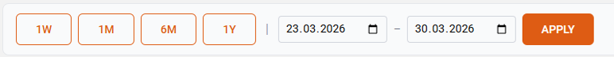
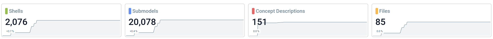
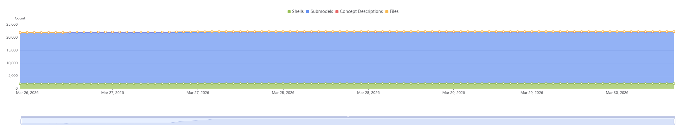
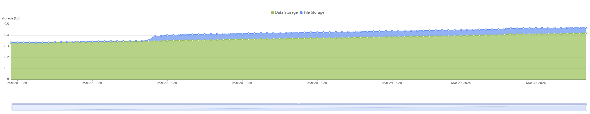
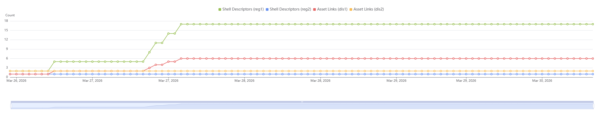

twinstudio Statistics
The Statistics page gives you an overview of your tenant's current state and historical development. You can monitor how your twin data, storage usage, and lookup data evolve over time — all in one place.
Time Range Selection
At the top of the page you can select the time period you want to analyze.
Quick Presets
Four preset buttons let you quickly switch between common time ranges:
- 7 days – Last 7 days
- 28 days – Last 28 days
- 6 months – Last 180 days
- 1 year – Last 365 days
The active preset is highlighted. Clicking a preset immediately loads the corresponding data.
Custom Date Range
You can also define a custom time range using the From and To date inputs. After entering your dates, click Apply to load the data.
Time range limits
The From date must be before the To date. The maximum supported range is 5 years.

Key Performance Indicators
Below the time range controls, KPI cards give you a quick snapshot of your tenant's current state.
Each card shows:
- The current value of the metric
- A trend indicator showing the percentage change compared to the start of the selected period (↑ green = increase, ↓ red = decrease)
- A sparkline — a small background chart visualizing the metric's trend over the selected period

Twin Data
| Metric | Description |
|---|---|
| Shells | Number of Asset Administration Shells in the repository |
| Submodels | Number of Submodels in the repository |
| Concept Descriptions | Number of Concept Descriptions in the repository |
| Files | Number of files stored in the file repository |
Monitoring objects
In each twinsphere tenant exist one shell and one submodel for operational monitoring purposes. You are not able to access them via API but they are included in the numbers of the tenant statistics.
Storage
| Metric | Unit | Description |
|---|---|---|
| DB Storage | GB | Current database storage consumption |
| Blob Storage | GB | Current blob (file) storage consumption |
| Average File Size | MB | Average size of stored files (no trend indicator) |
Lookup Data
This section displays metrics for your Discovery and Registry instances.
Conditional section
The Lookup Data section is only visible if your tenant has at least one Registry or Discovery instance configured. Each instance gets its own KPI card.
| Metric | Description |
|---|---|
| Shell Descriptors (per Registry instance) | Number of shell descriptors registered |
| Asset Links (per Discovery instance) | Number of asset links registered |
Charts
Three interactive charts visualize how your metrics have developed over the selected time period.
You can customize each chart:
- Toggle series: Use the checkboxes next to each series name to show or hide individual metrics
- Zoom: Use the slider at the bottom of the chart or your mouse wheel to zoom into a specific time range
- Pan: Click and drag to move through the timeline
- Hover tooltip: Hover over the chart to see exact values for all series at a given point in time
Automatic granularity
The data resolution is chosen automatically based on your selected time range:
| Time Range | Data Granularity |
|---|---|
| Up to 7 days | Hourly |
| Up to 30 days | Every 6 hours |
| Up to 1 year | Daily |
| Over 1 year (up to 5 years) | Weekly |
Twin Development
Shows how the counts of your twin data objects change over time.
Available series (all enabled by default):
- Shells
- Submodels
- Concept Descriptions
- Files

Storage Development
Shows how your storage consumption evolves over time.
Available series (all enabled by default):
- DB Storage
- Blob Storage

Lookup Data Development
Shows how the number of shell descriptors and asset links changes over time across your instances.
Conditional chart
This chart is only displayed if your tenant has at least one Registry or Discovery instance. If more than four instances are available, only the first four are pre-selected on initial load.

Export
You can export the entire Statistics page — including all KPI cards and charts — as a PNG image by clicking the Download button in the top-right corner.
The exported file is named: stats-{tenantId}-{date}.png